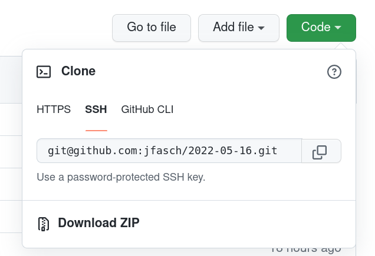

Python Advanced (2022-05-16 - 2022-05-18)¶
Log¶
Project Management¶
Unit Testing, Test Driven Development¶
Object Priented Programming¶
“class Person” basics
Weiteres Vorgehen
Download project from Github
Optional: create a virtual environment, as described in Virtual Environments (Livehacking Screenplay), and activate it.
Unpack ZIP file into project directory (say,
C:\Users\Student\my-project)Open command prompt (aka terminal)
Change into that directory (using the
cdcommand:cd C:\Users\Student\my-project)If not yet up-to-date: install requirements () as specified in the
requirements.txtfile (which is part of the project)$ python -m pip install -r requirements.txt
Run tests to see what the project status is:
$ python -m pytest ============================================================== test session starts =============================================================== platform linux -- Python 3.9.12, pytest-7.1.2, pluggy-1.0.0 rootdir: /home/jfasch/tmp/2022-05-16 collected 5 items tests/test_person_basics.py xx [ 40%] tests/test_persondb_basics.py x [ 60%] tests/test_pytest_demo.py .. [100%] ========================================================== 2 passed, 3 xfailed in 0.02s ==========================================================
Fix tests
{kind=link}
OO: next exercise (CSV as always 🙄)¶
Exercise: Exception Handling¶
Fix tests in tests/test_persondb.py. One
by one, remove the @pytest.mark.xfail decorator, and fix failures
from:
test_duplicate_svnr()test_update_sunnycase()test_update_notexist()test_update_exact_duplicate()
Notes:
See Notebook->Exceptions for how to define and raise exceptions (and for how to handle exceptions - though only the former is relevant for the purpose of completing the exercises)
A number of exception types need to be created. It is up to you where to define them - the simplest way is to define them right in
persondb.pyfor now.
Standesregister nach SQLite3¶
$ sqlite3 data/standesregister.sqlite3
SQLite version 3.34.1 2021-01-20 14:10:07
Enter ".help" for usage hints.
sqlite> CREATE TABLE persons (svnr text, firstname text, lastname text);
sqlite> .schema
CREATE TABLE persons (svnr text, firstname text, lastname text);
Write new program …
$ python persondb-csv-to-sqlite3.py data/standesregister.csv data/standesregister.sqlite3
XML/Element Tree¶
Projektabschlusstag¶
MacOS woes
Install homebrew: https://brew.sh/
Links¶
Basic Python¶
Python Tutorial: Using Try/Except Blocks for Error Handling, by Corey Schafer
Python Tutorial: re Module - How to Write and Match Regular Expressions (Regex), by Corey Schafer
Python Tutorial: CSV Module - How to Read, Parse, and Write CSV Files, by Corey Schafer
Python Tutorial: VENV (Windows) - How to Use Virtual Environments with the Built-In venv Module: Corey Schafer again. Virtual environments are kind of an isolated development sandbox, solving a similar problem as containers do, but much more lightweight and Python only.